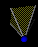

How to Manipulate
the Scene
You need to have the Blaxxun Contact version 4.4 or higher installed
on your computer before you can use WebTOP.
Navigation Controls
Five icons are provided to allow you to control the appearance
of the scene.
| Viewpoint |
Zoom |
Pan |
Rotate |
Hide |
|  |
|
|
|
|
The Viewpoint icons allow you to view the scene from some
preprogrammed angles (or viewpoints.)
The Zoom icons allows you to
zooms into or out of the scene. To use it, place the cursor over the icon,
depress and hold down the left mouse button, and push into (pull out of) to
zoom into (out of) the scene.
The Pan icons allows you to translate the scene
left /right or up/down. To use
it, place the cursor over the icon, depress and hold down the left mouse
button, and move the cursor in the desired direction.
The Rotate icons allows you to rotate
the scene. To use it, place the cursor over the icon, depress and hold down
the left mouse button, and rotate the checkered ball in the desired direction.
The Hide Icons icons allows you to hide all the other navigation icons. When
you click on it, they all disappear, and the Hide Icons button gets very dim.
If you again click this button, the other navigation icons will reappear, and
the Hide Icons button becomes bright again.

|